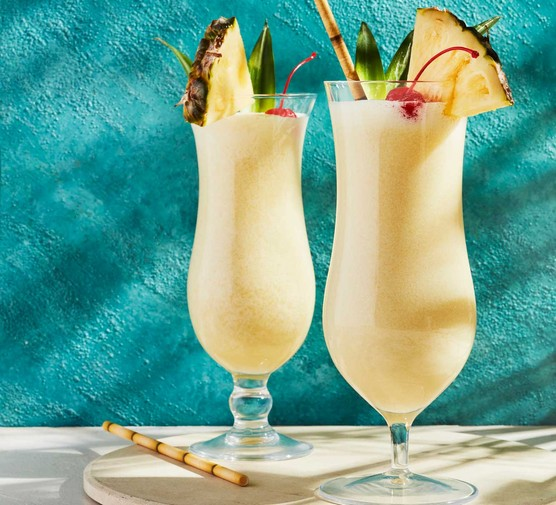
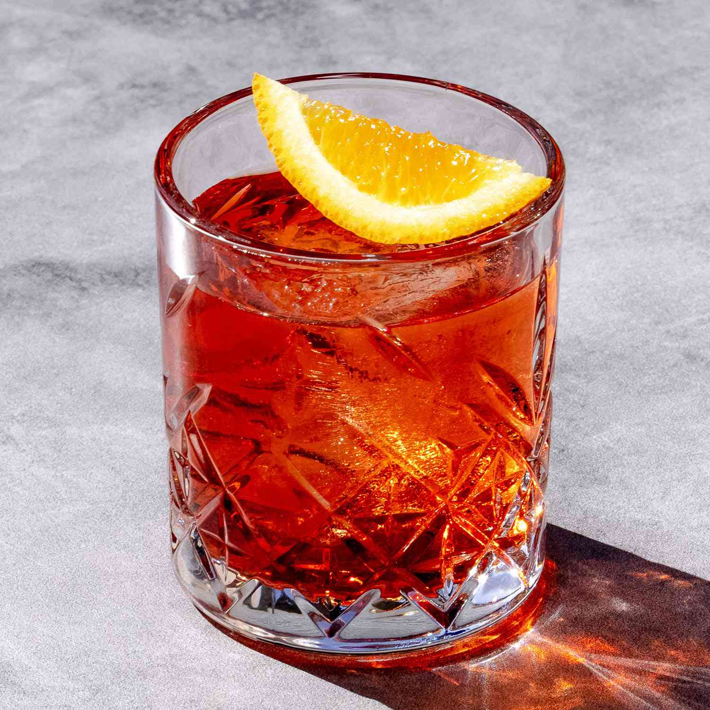

available drinks
 Essa magia acontece com apenas 4 ingredientes: cachaça, limão, açúcar e gelo.
Essa magia acontece com apenas 4 ingredientes: cachaça, limão, açúcar e gelo.

Oriunda de Porto Rico, a tradicional Piña Colada é feita de rum, leite de coco e suco de abacaxi.
{kind=link}

Agora, imagine 1 dose de gim, 1 dose de Campari, 1 dose de vermute tinto e 1 rodela de laranja. Junte tudo e adicione cubos de gelo para servir bem geladinho.
{kind=link}
 O Cosmopolitan é uma bebida que envolve vodca, licor de laranja ou suco de limão, e suco de Cranberry.
O Cosmopolitan é uma bebida que envolve vodca, licor de laranja ou suco de limão, e suco de Cranberry.
 Leva tequila, suco de limão e licor de laranja.
Leva tequila, suco de limão e licor de laranja.
 drink cubano à base de rum branco, açúcar, hortelã, limão e água gaseificada.
drink cubano à base de rum branco, açúcar, hortelã, limão e água gaseificada.
 leva vodka gelada, licor de pêssego, suco de laranja, algumas gotas de xarope de groselha para decorar e 2 pedras de gelo moídas.
leva vodka gelada, licor de pêssego, suco de laranja, algumas gotas de xarope de groselha para decorar e 2 pedras de gelo moídas.
 London Dry Gin, vermute doce e Fernet são seus ingredientes, e esse último dá um toque mentolado delicioso à bebida.
London Dry Gin, vermute doce e Fernet são seus ingredientes, e esse último dá um toque mentolado delicioso à bebida.